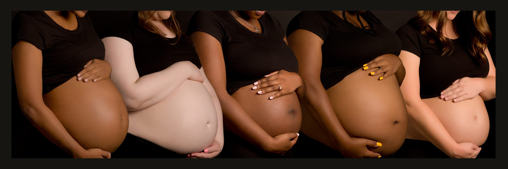
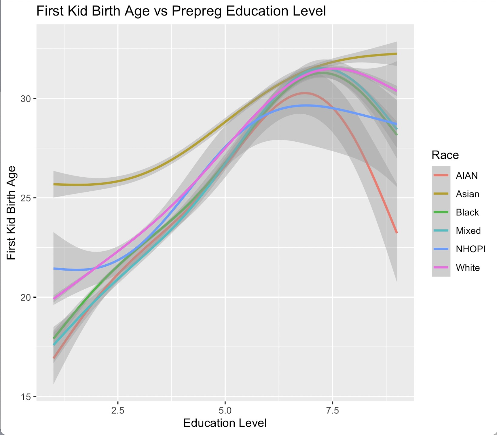

Big Picture

This comes from the file big_picture.Rmd.
How Education Levels are Redefining Motherhood Across Race
Problem We Aim to Solve
Underage pregnancies, this simple yet loaded question outlines a phenomenon that plagues families and societies all around the world. Younger mothers are at higher risk for pregnancy-related high blood pressure and its complications. Risks for the baby may include premature birth and a low birth weight. Additionally, underage pregnancies can easily compromise a struggling family’s finances with the additional burden of a child they were not prepared for. According to data from the National Library of Medicine, Underage pregnancies have decreased globally, from 64.5 per 1000 women in 2000 to 42.5 per 1000 women in 2021. However, there are huge differences in levels between and within countries and race.
Pattern Behind the Data
In order to investigate the causes of underage pregnancies, our team conducted various statistical analyses using data from the National Bureau of Economic Research, specifically Natality Birth Data. We select random samples from 2016 to 2021 and combine them together for a comprehensive analysis, focusing on motherhood across different races and examining how education influences the age at which women begin motherhood. With running linear and logistic regression analyses, Underage pregnancy shows intricately linked to a spectrum of socio-economic, educational, and health-related factors, and these relationships have evolved distinctly.

The figure “First Kid Birth Age vs Year” shows first kid birth age change over time. It shows the average age at which women from different racial backgrounds are having their first child from the year 2016 to 2021. The trend lines indicate that for some race groups, like Asian and White, the age of first-time motherhood is gradually increasing. For other groups, the lines are relatively flat, suggesting that the age of first birth remains constant. Overall, from 2016 to 2021, there is a steady or increasing age of first birth which may indicate a need for increased reproductive health education during later stages of life. Furthermore, we incorporate the dataset about Real Per Capita Personal Income for the United States (RPIPCUS) from 2016 to 2021. In the “First Kid Birth Age vs real per Capita”, as real per capita income increases, so does the age at which women have their first child, especially among Asian and White populations, suggests that economic stability may play a role in family planning decisions.

In the “First Kid Birth Age vs Prepreg Education Level Graph”, the relationship between a woman’s education level (measured from less than high school to doctorate degrees) and the age at which she has her first child is overall positive. Higher education levels generally correlate with older ages at first birth, a trend consistent across all racial groups. However, the slopes and positions of the lines vary, suggesting that the influence of education on family planning decisions is experienced differently across racial communities. A notable observation is a peak around education level 6, which corresponds to a Bachelor’s degree (BA, AB, BS). With the exception of Asians, most racial groups show a decline in first birth rates after reaching education level 6. Furthermore, the dataset records the age at first birth, which can lead to a confounding situation. This is because individuals who give birth at a younger age may have a lower likelihood of continuing their education. We will provide further explanation about our model in the Analysis section.
Our Goal
Overall, our model and study hope to be more than a theoretical exercise. We wish that our model could inform targeted educational programs that empower women to make informed decisions about motherhood. It could also assist healthcare providers to anticipate and meet the needs of expectant mothers, finally beneficial to the health and well-being of the next generation.
Resources and Further Information
https://www.who.int/news-room/fact-sheets/detail/adolescent-pregnancy
- WHO collaborates with various partners to promote awareness of adolescent issues, enhance the evidence and epidemiological foundation for intervention, create and assess program support tools, strengthen capabilities, and initiate pilot projects in an increasing number of countries that acknowledge the importance of addressing adolescents’ sexual and reproductive health needs.
https://www.cdc.gov/reproductivehealth/maternalinfanthealth/pregnancy-complications.html * To enhance support and information regarding pregnancy, the CDC information on healthcare before, during, and after pregnancy to reduce the risk of complications. Individuals who are pregnant or have recently given birth have access to consult their healthcare provider about any concerns and to seek immediate medical attention if they experience urgent maternal warning signs during or after pregnancy.